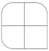
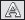
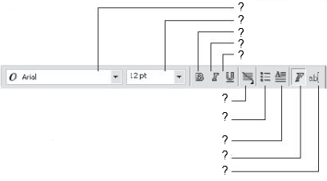
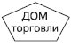
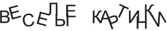
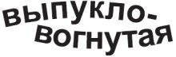
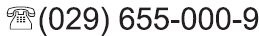

Номер учебного элемента
Учебный материал с указанием заданий
Рекомендации по выполнению заданий, оценка
УЭ – 0
Цель: изучить возможности редактирования текста в программе Corel Draw.
Внимательно прочитайте цель урока
УЭ – 1
Проверка изученного материала
Подготовка к работе.
I. Подготовьте ответы на следующие вопросы:
-
Из каких основных элементов состоит рабочее окно программы?
-
Что нужно сделать чтобы отобразить или скрыть какую-либо панель инструментов?
-
Как можно изменить формат бумаги и ориентацию страницы?
-
Какие основные элементы стандартной панели инструментов вы можете назвать?

II. Выполните задания:
-
Используя скругление углов создайте следующее изображение:
 -
Используя сектора и дуги создайте следующее изображение:
-
Изменяя значение степени заострения, создайте следующее изображение:

III. Оцените свои знания.
Критерии оценки.
-
"5" – 0 ошибок,
-
"4" – 1-2 ошибки,
-
"3" – 3 ошибки,
-
"2" – 4 и более ошибок.
Задание №1 оценивается 4-мя баллами
Выполнение каждого пункта из задания №2 оценивается в 1 балл
УЭ – 2
Изучение нового материала
Цель: получить представление об основах работы с текстом в программе Corel Draw.
Задание: внимательно ознакомьтесь с теоретическим материалом учебника (лекции 4).
План:
-
Ознакомиться с основными свойствами шрифтов.
-
Ознакомиться с основными типами текста в программе Corel Draw.
-
Рассмотреть возможности форматирования текста.
-
Изучить принципы обработки текста.
Внимательно ознакомьтесь с материалом
УЭ – 3
Цель: самостоятельно изучить основы работы с текстом.
I. Ответьте на тестовые вопросы:
-
Какой инструмент в программе Corel Draw предназначен для работы с текстом?:
-
Curve(кривая);
-
Object(объект);
-
Text(текст);
-
Outline(контур).
-
-
При нажатии на какую кнопку на панели свойств выделенный текст станет полужирным?:
-

-

-

-
-
Для чего используется строчный текст(Artistic Text)?:
-
для создания коротких текстовых заголовков;
-
для создания больших блоков текста с последующим форматированием стандартными способами;
-
он используется всегда;
-
для удобного выравнивания.
-
-
Можно ли отобразить текст вдоль кривой?:
-
да только вдоль линии;
-
да только вдоль контура автофигуры;
-
нет нельзя;
-
да вдоль любой линии или замкнутого контура.
-
-
Для чего используется абзацный текст(Paragraph Text)?:
-
для создания больших блоков текста с последующим форматированием стандартными способами;
-
для удобного выравнивания;
-
для создания коротких текстовых заголовков;
-
только для отображения вдоль кривой.
-
-
Можно ли поместить текст внутрь существующей фигуры:
-
Можно только строчный текст;
-
Можно только абзацный текст;
-
Можно и тот и другой;
-
Нельзя.
-
II. Проверка правильности выполнения заданий.
Проверка правильности выполнения заданий. Оценка работы (каждый правильный ответ оценивается в 1 балл, если в ответе есть ошибки – 0 баллов). Проанализируйте ошибки.
Результат(в баллах):
За каждый правильный ответ – 1 балл
Результаты проверяет программа
УЭ – 4
Закрепление изученного материала.
Цель: выявить уровень усвоения нового материала.
Задание 1:
Описать основные элементы, которые отображены на панели свойств текста:

Задание 2:
-
Поместите абзацный текст внутрь фигуры:
 -
С помощью трансформационных искажений (уменьшение размера, наклон) создайте тень у надписи:
-
При помощи горизонтального и вертикального сдвигов, а также параметра вращения для отдельных букв создайте подобную надпись:
 -
Направляя текст вдоль линий создайте следующее изображение:
 -
Используя вставку специальных символов создайте следующее изображенеие:

Оцените свою работу.
Критерии оценки:
-
нет ошибок – 5 баллов;
-
1 ошибка – 4 балла;
-
2 ошибки – 3 балла;
-
3 и более ошибок – 2 балла.
За правильное выполнение 1-го задания – 2 балл
За правильное выполнение каждой фигуры из задания 2 – 1 балл
УЭ – 5
Подведение итогов урока.
-
Прочитайте цели урока.
-
Достигли ли Вы цели урока? В какой степени?
-
Оцените свою работу.
Подсчитайте количество баллов, которое Вы набрали при выполнении заданий.
Поставьте себе оценку.
Индивидуально
Заполнить лист контроля